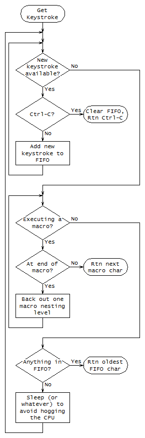
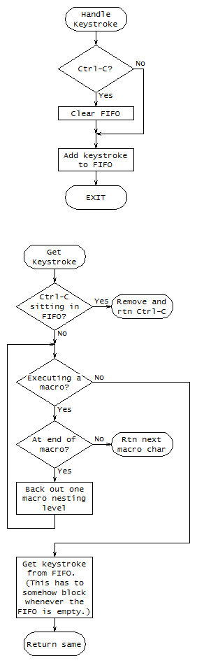
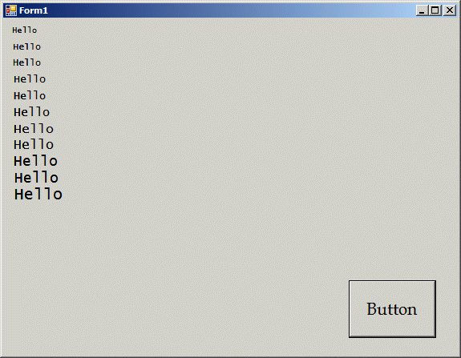
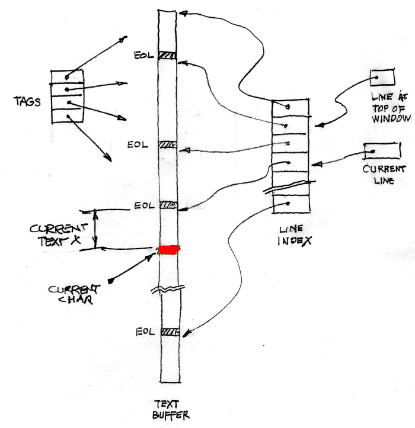
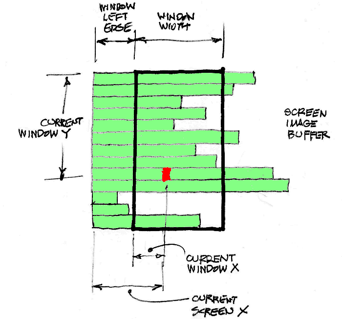
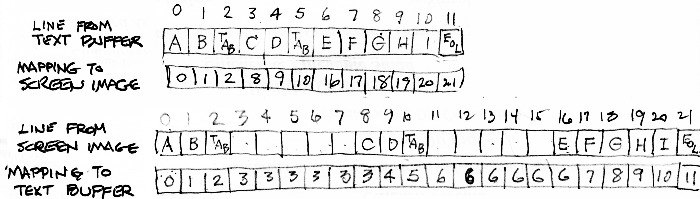

Make a new version of Waedit with the following goals in mind:
The original Waedit managed input from the keyboard by handling OnChar and OnKeyDown messages from Windows. In order to implement the macros in a straightforward way, I think we need to turn things around so the main loop of the editor can request keystrokes when it needs them, rather than having it set up to handle each keystroke as it appears. This will also help with the correct handling of Ctrl-C according to the Intel AEDIT manual. (The original Waedit doesn't handle Ctrl-C at all.)
Without knowing exactly how this could work in C# and without diving too deeply into the details this early in the game, let's assume some sort of input processor that will serve keystrokes one at a time upon request from the editor's main loop. Each time a keystroke is requested, this mechanism will:
Something like this:

Depending on how C# and .NET work, we may need to break this into two threads ... one that processes Windows messages and maintains the FIFO buffer, and another that does everything else. In that case, it would look more like the following. Note that the FIFO would have to be protected against concurrent access by the two threads. Update: This second arrangement is indeed the better of the two.

So how do we handle debug output with C# and .NET now that serial ports are a thing of the past? The Trace and Debug classes in .NET make this real easy. Here is a simple program that shows the Debug class in use. Be sure to include /d:DEBUG if compling from the command line, or build the Debug configuration from the IDE.
/* ////////////////////////////////////////////////////////////////////////////
Debug and Trace Demo
//////////////////////////////////////////////////////////////////////////// */
/* Be sure to include /d:DEBUG if compling from the command line, or build the
Debug configuration from the IDE. */
using System.Diagnostics;
public class Hello1
{
public static void Main()
{
/* Set up trace listeners as desired. In a forms-based application, it works
to do this in the form's Load handler */
/* For debug output to a console. If you want to do this, you'll need to
use the IDE to set the program's Output Type to Console Application in
the project's properties. */
TextWriterTraceListener tr1 = new
TextWriterTraceListener(System.Console.Out);
Debug.Listeners.Add(tr1);
/* For debug output to a text file. */
TextWriterTraceListener tr2 = new
TextWriterTraceListener(System.IO.File.CreateText("Output.txt"));
Debug.Listeners.Add(tr2);
/* Set up to flush the debug output after every write. */
Debug.AutoFlush = true;
System.Console.WriteLine("Hello, World!");
/* Sample debug output. See also the Trace class if you want output even
for the Release configuration. */
Debug.WriteLine("Debug output.");
} // End Main()
} // End class Hello1
Now how about getting data from the keyboard in a forms-based C# program? Let's just hack at a small test program until we figure out how to do it, like so:
For the record, here's the what the test program looked like at this point:
using System;
using System.Collections.Generic;
using System.ComponentModel;
using System.Data;
using System.Diagnostics;
using System.Drawing;
using System.Linq;
using System.Text;
using System.Windows.Forms;
namespace Test1
{
public partial class Form1 : Form
{
public Form1()
{
InitializeComponent();
}
private void Form1_Load(object sender, EventArgs e)
{
TextWriterTraceListener tr1 = new
TextWriterTraceListener(System.Console.Out);
Debug.Listeners.Add(tr1);
TextWriterTraceListener tr2 = new
TextWriterTraceListener(System.IO.File.CreateText("Output.txt"));
Debug.Listeners.Add(tr2);
Debug.AutoFlush = true;
Console.WriteLine("Form is loaded!");
}
private void Form1_KeyDown(object sender, KeyEventArgs e)
{
Debug.WriteLine("In KeyDown()");
Debug.WriteLine("KeyCode: " + e.KeyCode);
Debug.WriteLine("KeyData: " + e.KeyData);
Debug.WriteLine("KeyValue: " + e.KeyValue);
Debug.WriteLine("");
}
private void Form1_KeyPress(object sender, KeyPressEventArgs e)
{
Debug.WriteLine("In KeyPress()");
Debug.WriteLine("KeyChar: " + e.KeyChar);
Debug.WriteLine("Ascii Code: " + (int)e.KeyChar);
Debug.WriteLine("Back to char: " + (char)((int)e.KeyChar));
Debug.WriteLine("");
}
}
}
Quickly skimmed through the first chapters of the C# book aiming to refresh my memory about any gotchas. Most of the weirdness seems related to classes and inheritance and all that sort of stuff, which probably won't be an issue in this project. So I think I'm good to go.
Became concerned about how to represent the big text buffer. Should it be a simple array? or a C# string? or a List<T>? or an ArrayList? or something else altogether? A C# string would probably be the easiest, but I'm a little worried that performance would suffer because they're immutable (i.e., every change means a completely new object is created on the heap to replace the old one). Probably should write some little test programs and see exactly how the different options stack up.
A simple array probably doesn't make sense because we need a container that will automatically expand with the text. Further, the docs for ArrayList say that "it does not always offer the best performance". So that kinda leaves the List<T> class and the standard C# string type. Let's see how those compare with respect to performance.
/* ------------------------------------------------------------------------- */
/* List<byte> Performance Test */
/* ------------------------------------------------------------------------- */
using System;
using System.Diagnostics;
using System.Collections.Generic;
class CTest
{
static void Main()
{
Stopwatch stopwatch = new Stopwatch(); // Stopwatch reference
int i, j; // Generic ints
List<byte> s = new List<byte>(); // List<byte> reference
stopwatch.Start(); // Start the stopwatch
for (i=0; i<15; i++)
{
for (j=0; j<100000; j++)
{
s.Insert(0, (byte)'a');
}
Console.WriteLine("Elapsed time: {0}",
stopwatch.Elapsed);
} // End outer for
stopwatch.Stop(); // Stop the stopwatch and
Console.WriteLine(""); // show the result
Console.WriteLine("Elapsed time: {0}",
stopwatch.Elapsed);
} // End Main()
} // End class CTest
The program above produced the output below.
Elapsed time: 00:00:00.2046883 Elapsed time: 00:00:00.7947538 Elapsed time: 00:00:01.8017924 Elapsed time: 00:00:03.3632831 Elapsed time: 00:00:05.3885845 Elapsed time: 00:00:07.8800388 Elapsed time: 00:00:10.8124040 Elapsed time: 00:00:14.3584433 Elapsed time: 00:00:18.3875274 Elapsed time: 00:00:22.6814844 Elapsed time: 00:00:27.4114655 Elapsed time: 00:00:32.5868050 Elapsed time: 00:00:38.2060114 Elapsed time: 00:00:44.2988388 Elapsed time: 00:00:50.8329884 Elapsed time: 00:00:50.8330319
The same program, but set up to add characters to the string at the end instead of the beginning, gave these results:
Elapsed time: 00:00:00.0009056 Elapsed time: 00:00:00.0024973 Elapsed time: 00:00:00.0029018 Elapsed time: 00:00:00.0032305 Elapsed time: 00:00:00.0035578 Elapsed time: 00:00:00.0040232 Elapsed time: 00:00:00.0043508 Elapsed time: 00:00:00.0046774 Elapsed time: 00:00:00.0050034 Elapsed time: 00:00:00.0053300 Elapsed time: 00:00:00.0059525 Elapsed time: 00:00:00.0062797 Elapsed time: 00:00:00.0066060 Elapsed time: 00:00:00.0069345 Elapsed time: 00:00:00.0072608 Elapsed time: 00:00:00.0072680
/* ------------------------------------------------------------------------- */
/* string Performance Test */
/* ------------------------------------------------------------------------- */
using System;
using System.Diagnostics;
using System.Collections.Generic;
class CTest
{
static void Main()
{
Stopwatch stopwatch = new Stopwatch(); // Stopwatch reference
int i, j; // Generic ints
string s = ""; // A generic string
stopwatch.Start(); // Start the stopwatch
for (i=0; i<15; i++)
{
for (j=0; j<100000; j++)
{
s = s.Insert(0, "a");
}
Console.WriteLine("Elapsed time: {0}",
stopwatch.Elapsed);
} // End outer for
stopwatch.Stop(); // Stop the stopwatch and
Console.WriteLine("");
Console.WriteLine("Elapsed time: {0}", // show the result
stopwatch.Elapsed);
} // End Main()
} // End class CTest
The program above produced the output below.
Elapsed time: 00:00:01.7643056 Elapsed time: 00:00:09.7498720 Elapsed time: 00:00:23.9984336 Elapsed time: 00:00:43.6202979 Elapsed time: 00:01:09.0095000 Elapsed time: 00:01:40.5190700 Elapsed time: 00:02:17.4519352 Elapsed time: 00:03:00.5453473 Elapsed time: 00:03:51.1015402 Elapsed time: 00:04:47.4492509 Elapsed time: 00:05:49.4720254 Elapsed time: 00:06:57.6580057 Elapsed time: 00:08:12.1356746 Elapsed time: 00:09:32.4937587 Elapsed time: 00:10:59.1118258 Elapsed time: 00:10:59.1125355
The same program, but set up to add characters to the string at the end instead of the beginning, gave these results:
Elapsed time: 00:00:01.6819460 Elapsed time: 00:00:07.8604611 Elapsed time: 00:00:19.7375848 Elapsed time: 00:00:37.1306675 Elapsed time: 00:00:59.7925154 Elapsed time: 00:01:28.3447850 Elapsed time: 00:02:02.5312413 Elapsed time: 00:02:42.6216511 Elapsed time: 00:03:28.9731681 Elapsed time: 00:04:21.5991318 Elapsed time: 00:05:21.7898596 Elapsed time: 00:06:29.1973631 Elapsed time: 00:07:46.8591299 Elapsed time: 00:09:11.6428583 Elapsed time: 00:10:44.1590171 Elapsed time: 00:10:44.1593271
Well, that makes it pretty clear that we don't want to use a string for the big buffer! So let's say it will be a List<byte> and press on from there.
Skimmed through another C# book, then started worrying about how to set up and run two threads--one to handle the UI and one to run the editor, as hinted at on July 21. Found an internet example here of a producer/consumer pattern that uses an AutoResetEvent object for synchronization.
Here's how we might use the producer/consumer pattern to handle keyboard input. For simplicity, we'll lump everything into the Form1.cs file for this example. There will be time enough later to figure out how to break everything into appropriate modules.
/* ////////////////////////////////////////////////////////////////////////////
Keyboard Input Test
///////////////////////////////////////////////////////////////////////////////
DESCRIPTION: THis example shows how we'll probably handle keyboard intput in
the new Waedit program.
REVISIONS: 27 Jul 16 - RAC - Genesis, with big hints from the example
found here:
http://www.albahari.com/threading/part2.aspx
//////////////////////////////////////////////////////////////////////////// */
using System;
using System.Collections.Generic;
using System.ComponentModel;
using System.Data;
using System.Drawing;
using System.Linq;
using System.Text;
using System.Threading;
using System.Windows.Forms;
namespace kbtest
{
public partial class Form1 : Form
{
/* ////////////////////////////////////////////////////////////////////////////
Names for Numbers
//////////////////////////////////////////////////////////////////////////// */
public const byte MVK_PGUP = 0x80; // Codes for some special keys that
public const byte MVK_PGDN = 0x81; // will coexist peacefully with the
public const byte MVK_HOME = 0x82; // normal ASCII character set.
public const byte MVK_LEFT = 0x83;
public const byte MVK_UP = 0x84;
public const byte MVK_RIGHT = 0x85;
public const byte MVK_DOWN = 0x86;
public const byte MVK_DELETE = 0x87;
/* ////////////////////////////////////////////////////////////////////////////
Constructor
//////////////////////////////////////////////////////////////////////////// */
public Form1()
{
InitializeComponent();
} // End constructor
/* ////////////////////////////////////////////////////////////////////////////
Form1_Load()
///////////////////////////////////////////////////////////////////////////////
DESCRIPTION: The framework calls this function before the form is displayed.
Here we start the thread that simulates the main editor loop.
NOTE: As this program is written, the EditorLoop thread continues to
run even after the program window has been closed. A real
program would have to shut down the EditorLoop thread in some
graceful way.
REVISIONS: 27 Jul 16 - RAC - Genesis
//////////////////////////////////////////////////////////////////////////// */
private void Form1_Load(object sender, EventArgs e)
{
Thread t;
t = new Thread(EditorGuts.MainEditorLoop); // Make a new thread
t.Start(); // Start it
} // End Form1_Load()
/* ////////////////////////////////////////////////////////////////////////////
Form1_KeyPress()
Form1_KeyDown()
///////////////////////////////////////////////////////////////////////////////
DESCRIPTION: KeyPress() is called for normal keys that produce printable
characters. We queue them up for processing by the editor.
We use KeyDown() to handle special keys (the arrows, Home, Del,
etc.) that don't produce printable characters. Here we
translate their key codes into codes that don't collide with
the normal printable characters before adding them to the
input queue.
REVISIONS: 27 Jul 16 - RAC - Genesis
//////////////////////////////////////////////////////////////////////////// */
private void Form1_KeyPress(object sender, KeyPressEventArgs e)
{
KeyboardBuffer.QueueKey((byte)e.KeyChar);
} // End Form1KeyPress()
/* ///////////////////////////////////////////////////////////////////////// */
private void Form1_KeyDown(object sender, KeyEventArgs e)
{
switch (e.KeyCode)
{
case Keys.PageUp: KeyboardBuffer.QueueKey(MVK_PGUP); break;
case Keys.PageDown: KeyboardBuffer.QueueKey(MVK_PGDN); break;
case Keys.Home: KeyboardBuffer.QueueKey(MVK_HOME); break;
case Keys.Left: KeyboardBuffer.QueueKey(MVK_LEFT); break;
case Keys.Up: KeyboardBuffer.QueueKey(MVK_UP); break;
case Keys.Right: KeyboardBuffer.QueueKey(MVK_RIGHT); break;
case Keys.Down: KeyboardBuffer.QueueKey(MVK_DOWN); break;
case Keys.Delete: KeyboardBuffer.QueueKey(MVK_DELETE); break;
} // End switch
} // End Form1_KeyDown()
} // End class Form1
public class KeyboardBuffer
{
/* ////////////////////////////////////////////////////////////////////////////
Class Variables
//////////////////////////////////////////////////////////////////////////// */
private static Queue<byte> keyboardBuffer = new Queue<byte>();
private static object bufferLock = new object();
private static EventWaitHandle waitHandle = new AutoResetEvent(false);
/* ////////////////////////////////////////////////////////////////////////////
QueueKey()
///////////////////////////////////////////////////////////////////////////////
DESCRIPTION: The KeyPress and KeyDown handlers call this function to put
incoming keystrokes into a FIFO buffer that's read by the main
editor loop thread.
REVISIONS: 27 Jul 16 - RAC - Genesis
//////////////////////////////////////////////////////////////////////////// */
public static void QueueKey(byte herb)
{
lock (bufferLock)
{
if (herb == 0x03) // Toss anything in the FIFO if
{ // the user hits Ctrl-C
keyboardBuffer.Clear();
}
keyboardBuffer.Enqueue(herb); // Add new byte to the FIFO
} // End lock
waitHandle.Set(); // Signal new byte availability
} // End QueueKey()
/* ////////////////////////////////////////////////////////////////////////////
GetKeyFromKeyboard()
///////////////////////////////////////////////////////////////////////////////
DESCRIPTION: The main editor loop calls this function to get input keys. If
no keyboard input is available, this function blocks.
REVISIONS: 27 Jul 16 - RAC - Genesis
//////////////////////////////////////////////////////////////////////////// */
public static byte GetKeyFromKeyboard()
{
while (true)
{
lock (bufferLock)
{
if (keyboardBuffer.Count > 0)
{
return keyboardBuffer.Dequeue();
}
} // End lock
waitHandle.WaitOne(); // Block for non-empty FIFO
} // End while
} // End GetKeyFromKeyboard()
} // End class KeyboardBuffer
public class EditorGuts
{
/* ////////////////////////////////////////////////////////////////////////////
MainEditorLoop()
///////////////////////////////////////////////////////////////////////////////
DESCRIPTION: This function runs forever in its own thread, repeatedly
grabbing input--either from the keyboard or from an executing
macro--and processing the keystrokes one by one.
NOTE: In the real program, the main editor loop will call a
GetKeystroke() routine that knows about macros. If a macro is
running, GetKeystroke() will grab input from the macro.
Otherwise, it will call GetKeyFromKeyboard() as needed to, um,
get a key from the keyboard. There are hints about this near
the end of the development diary entry for July 21, 2016.
NOTE: Don't forget to somehow terminate this thread when the
application closes.
REVISIONS: 27 Jul 16 - RAC - Genesis
//////////////////////////////////////////////////////////////////////////// */
public static void MainEditorLoop()
{
byte herb; // Input character
while (true)
{
herb = // Get next character
KeyboardBuffer.GetKeyFromKeyboard();
Console.WriteLine(herb); // Do something with it
Thread.Sleep(500); // Pretend it took a long time
}
} // End MainEditorLoop
} // End class EditorGuts
} // End namespace kbtest
Now let's play around a little bit to see what it takes to write some text and display a cursor on the form. If we can get that sort of nailed down, then I think we're ready to identify some appropriate classes and start on the real design. Based on the original Waedit, here are some of the things we'll need to think about when dealing with the display:
Here's some prototype code that answers some/most/all of the hard questions from yesterday.
using System;
using System.Collections.Generic;
using System.ComponentModel;
using System.Data;
using System.Drawing;
using System.Linq;
using System.Text;
using System.Windows.Forms;
namespace grafix
{
public partial class Form1 : Form
{
public Form1()
{
InitializeComponent();
}
private void button1_Click(object sender, EventArgs e)
{
int i; // A generic integer
Font font = null; // A generic Font
int lineSpacing;
float lineSpacingPixel = 0;
Point point = new Point();
Graphics g;
Size size = new Size(10000, 10000);;
/* Size of client area is easy to get: */
Console.WriteLine("Client area: " + this.ClientSize);
Console.WriteLine();
/* See how font line spacing (a.k.a. Font.Height) relates to the size
specified when the font is created. */
FontFamily fontFamily = new FontFamily("Lucida Console");
point.X = 10;
point.Y = 10;
g = this.CreateGraphics(); // This is probably similar to
// what we used to call a
// device context
for (i=10; i<=20; i++)
{
font = new Font(fontFamily, i, FontStyle.Regular, GraphicsUnit.Pixel);
lineSpacing = fontFamily.GetLineSpacing(FontStyle.Regular);
lineSpacingPixel = font.Size * lineSpacing /
fontFamily.GetEmHeight(FontStyle.Regular);
Console.WriteLine("size: {0}, line spacing: {1}, font.Height: {2}, " +
"measured character width: {3}", i, lineSpacingPixel, font.Height,
TextRenderer.MeasureText(g, ".", font, size,
TextFormatFlags.NoPadding).Width);
TextRenderer.DrawText(g, "Hello", font, point,
SystemColors.ControlText);
point.Y += 20;
}
/* The loop above produces this output:
size: 10, line spacing: 10, font.Height: 10, measured character width: 6
size: 11, line spacing: 11, font.Height: 11, measured character width: 7
size: 12, line spacing: 12, font.Height: 12, measured character width: 7
size: 13, line spacing: 13, font.Height: 13, measured character width: 8
size: 14, line spacing: 14, font.Height: 14, measured character width: 8
size: 15, line spacing: 15, font.Height: 15, measured character width: 9
size: 16, line spacing: 16, font.Height: 16, measured character width: 10
size: 17, line spacing: 17, font.Height: 17, measured character width: 10
size: 18, line spacing: 18, font.Height: 18, measured character width: 11
size: 19, line spacing: 19, font.Height: 19, measured character width: 11
size: 20, line spacing: 20, font.Height: 20, measured character width: 12
So for some happy reason (probably because of the GraphicsUnit.Pixel
specification), the line spacing is the same as the requested font size and
also the same as the reported font height. That makes things easy. */
} // End button1_Click()
} // End class Form1
} // End namespace grafix
Just for the record, here's a screenshot after the button was clicked: Careful inspection confirms the character widths reported by the program.

There are a number of different kinds of cursor movements that we need to sort of think about in order to come up with reasonable data structures for the text being edited and for the screen display. They are:
The original Waedit manages all this in kind of an ad hoc way that probably wasn't as elegant as it could have been. Given that we're starting over with a little bit of hindsight, and also that we're expanding the problem somewhat to include horizontal scrolling, it probably makes sense to plan this out a little bit. Let's start with pictures of some likely data structures:

As shown above, the Text Buffer is one-dimensional list of bytes that appear internally exactly (except for EOL markers, as explained above in the section titled Preliminary Design Notes) as they would be stored in a file. The Line Index is an auxiliary list of indexes that locate the beginnings of the individual lines of text. Current Line indexes the line that contains the current character, and a second variable identifies the line that's currently at the top of the visible window.
Current Char indexes the position of the current character within the text buffer. It is always on the current line. Finally, an array of four indexes locate the four tags.

This picture shows the Screen Image Buffer, which represents the lines of text that are currently being displayed. In this buffer, the text is the same as in the text buffer, except with tabs expanded into spaces and with an EOF marker added if the window includes or extends beyond the last line of text.
Tab expansion makes the mapping between a given character's position on the screen and its location within the text buffer sort of messy. To help make it easier to translate between the two, the same procedure that creates the screen image buffer from the text buffer will generate for each line in the screen image buffer two additional arrays. One will store the "Current Text X" value for each character on the line in the screen buffer. The other will store the "Current Screen X" value for each character on the line in the text buffer. This should eliminate much of the after-the-fact calculating and farting around with PHANTOM_BLANKS that the original Waedit does.
Here's an example showing a line of text as it might appear in the Text Buffer, the corresponding tab-expanded version that would go into the Screren Image Buffer, and the two mapping arrays just described.

Not sure yet exactly how we'll represent tabs and the blanks used to expand them in the screen image. Probably just with blanks ... I don't see any reason to put tab characters in the screen image, since we'd then just have to handle them specially when it came time to paint the screen.
Okay. Now what happens in each of the three cases identified above?
START Case 1
Set the current character to the new spot
CALL Update Display
END
START Update Display
Move current line to line containing the current character
IF Is new line in window?\No\Yes
IF Is new line "near" window?\Yes\No
Do minimum vertical scroll needed to move new line into view
ELSE
Scroll vertically to put new line at the viewrow
ENDIF
CALL Rebuild the Screen Image
ENDIF
Look up Current Screen X in screen image mapping array
IF Is current char visible?\No\Yes
IF Is new char "near" window?\Yes\No
Do minimum horizontal scroll needed to move new char into view
ELSE
Scroll horizontally to put new char in the middle of the window
ENDIF
ENDIF
CALL Paint the window
Adjust cursor X position
END
(Almost the same as Case 1.)
START Case 2
Move current character left or right by the repeat count
IF Did we go too far?\Yes\No
Fix it
ENDIF
CALL Update Display
END
Note that part of this is the same as part of UpdateDisplay. That means we need to bust UpdateDisplay into smaller parts, one of which can be called here.
START Case 3
Adjust current line
IF Did we go too far?\Yes\No
Fix it
ENDIF
IF Is new line in window?\No\Yes
IF Is new line "near" window?\Yes\No
Do minimum vertical scroll needed to move new line into view
ELSE
Scroll vertically to put new line at the viewrow
ENDIF
CALL Rebuild the Screen Image
ENDIF
Adjust current char to match new cursor position
CALL Paint the window
END
Very well. I think we know enough now to start figuring out how to partition everything into appropriate classes. As a first step towards that, let's informally list potential classes, and for each one identify the data that it will contain and the methods that it will expose. But note that a lot of this is redone below on August 8, 2016.
-------------------------------------------------------------------------------
MACRO MANAGER
-------------------------------------------------------------------------------
PUBLIC METHODS
- A function to start capture of a macro which will either create a new macro
or overwrite an existing one if a macro by the same name already exists.
Make sure this fails when attempted while a macro is being executed. (For
Macro Create)
- A function to stop macro capture, and to delete it completely if it's
empty. (To exit Macro Create mode)
- A function to read a macro file, decode it, store the macros internally,
and execute any Set commands found in the file. (For Macro Get)
- A function to encode a single key code as it would appear in a macro file.
(For Macro Insert)
- A function to return a list of the currently available macros. (For Macro
List)
- A function that returns the encoded form of a specified macro. (For Macro
Save)
- A function that starts the execution of a specified macro. (For Macro
Execute)
- A function that returns the next character during macro execution.
- A function that returns the current macro nesting level. The main loop
will use this to determine if it should get its input from the macro engine
or the keyboard buffer.
PRIVATE METHODS
- A function that decodes an encoded macro (for use during Macro Get).
PRIVATE DATA
- A list of macros. For each one, associate the macro's name with its body.
Represent the body using the same codes that come from the keyboard, not
the encoded form stored in the macro files.
- The current macro nesting level. This will be -1 when executing commands
directly from the keyboard, and a (probably small) non-negative integer
when executing a macro.
- A list of structures that keep track of what's going on at each macro
nesting level. Each of these will include things like:
> A pointer of some sort to the macro that's being executed at this level.
> The current position within the macro (a program counter, if you will).
> The repeat count for the macro. Either define a special value that means
"infinite" or else create another element in this structure for that
purpose.
> The state (command, insert, or exchange) to return to when the macro
finishes.
> The "Go" flag. See the Aedit docs for details.
-------------------------------------------------------------------------------
KEYBOARD BUFFER
-------------------------------------------------------------------------------
NOTES
- Look for prototype code for this module above in the entry for July 27,
2016.
PUBLIC METHODS
- A function to enqueue an incoming byte. Normally called by the form's
keyboard handlers when the user hits a key. Also called by the macro
manager to handle "Set" commands found when reading a macro file.
- A function to get one key from the buffer. This one blocks if the buffer
is empty and remains so until more input appears.
PRIVATE DATA
- A byte queue to buffer up the incoming data.
- A lock for the queue to prevent concurrent access by multiple threads.
- A wait handle for signalling the main loop when new input becomes
available.
-------------------------------------------------------------------------------
MAIN LOOP
-------------------------------------------------------------------------------
NOTES
- This class implements a thread that spins forever in a loop, grabbing input
one keystroke at a time from the keyboard or the macro engine, and
responding accordingly.
PUBLIC METHODS
- The main loop. This thing starts when the main form is loaded and runs in
its own thread forever thereafter. It's implemented as a giant state
machine that mirrors the various states that the user sees as he's using
the editor.
PRIVATE METHODS
- Tons of little routines to implement the various commands.
PRIVATE DATA
- The editor state
-------------------------------------------------------------------------------
TEXT BUFFER
-------------------------------------------------------------------------------
NOTES
- Be especially careful to keep the the text buffer interface clean and
simple, because we might need to change its implementation to improve
performance.
PUBLIC METHODS
- Return a specified line of text.
- Build (or rebuild) the line index.
- Starting at a specified spot, find the next instance of a specified string.
- Insert a specified string at a specified spot and repair the tag indexes.
- Return a specified number of bytes from a specified spot.
- Delete a specified number of bytes starting at a specified spot.
- Clear the buffer.
PRIVATE DATA
- An image of the text being edited, exactly (except for EOL markers) as it
would appear in a file. This will most likely be implemented as a list of
bytes so it can grow easily. As noted above, EOL will be indicated by a
special code that represents the LFs, CRs, or CR/LF pairs that were found
in the original file.
- An index to the beginning of each line of text. The first element of this
list will always point to the beginning of the text. Subsequent elements
will point to the bytes that immediately follow subsequent end-of-line
markers (EOLs).
- An array of indexes to the four tag positions. (These are here because
they have to be fixed up along with the line index when text insertions or
deletions are done.)
-------------------------------------------------------------------------------
DISPLAY MANAGER
-------------------------------------------------------------------------------
NOTES
- Somehow this thing has to know about the selection of the block/delete
buffer.
PUBLIC METHODS
- Update the display.
- Build (or rebuild) the screen image.
- Change font size
PRIVATE DATA
- The screen image buffer--an image of the lines of text currently being
displayed, with tabs expanded.
- For each line in the buffer, an array that indicates how each character
should be rendered (i.e., whether it should be 1) normal, 2) normal with
alignment bar background, or 3) selected).
- For each line in the buffer, a flag indicating whether or not all the
characters on the line should be rendered the same.
- For each line in the buffer, a map indicating, for each character on the
line, that character's position within the corresponding line in the text
buffer. Let's call this list of maps the "Image to Text Map". (See the
picture above in the section titled "Some Notes on Cursor Movement".)
- For each corresponding line in the text buffer, a map indicating, for each
character on the line, that character's position within the line in the
screen image buffer. Let's call this list of maps the "Text to Image Map".
(See the picture above in the section titled "Some Notes on Cursor
Movement".)
- Position of the visible window within the text. Vertically, this means
which line of text appears at the top of the window. Horizontally, it
means which column of the tab-expanded text appears at the left edge of the
window.
- Dimensions of the visible window, in both directions, in pixels.
- Horizontal dimension of the visible window, in character-widths (which
depends on the current font size).
- Vertical dimension of the visible window, in character-heights, (which
depends on the current font size).
- Font information
-------------------------------------------------------------------------------
CURSOR MANAGER
-------------------------------------------------------------------------------
PUBLIC METHODS
- Thread (or maybe a timer event handler) to keep the cursor blinking,
wherever it may be.
-------------------------------------------------------------------------------
MAIN FORM
-------------------------------------------------------------------------------
PUBLIC METHODS
- Initialization stuff. Validate and process command line parameters, load
the input file, start the Main Loop thread, start the Cursor thread, etc.
-------------------------------------------------------------------------------
FILE MANAGER
-------------------------------------------------------------------------------
PUBLIC METHODS
- Read input file, discover EOL encoding, translate EOLs to uniform code, add
EOF marker, and put result in text buffer.
- Remove EOF marker, encode EOLs in text buffer, and write result to file.
That's probably a good start. Except for the parts we've already worked out (keyboard input handling, macros, display, etc.) the bulk of the actual editing logic should follow the original Waedit pretty closely. So let's not worry about that too much any more, and instead make a little development plan:
I started down the path outlined line the last post, and got everything working pretty well through Step 4.
I then tried to set up a blinking cursor based on a timer, similar to how it worked in the original Waedit. This turned out to be not so easy, for two reasons. First of all, there doesn't seem to be an "XOR draw" function in the .NET system, so there isn't a straightforward way to repaint the background during the "cursor off" time. To get around that, I set up the timer to draw the cursor once per second, and then 500 ms later to erase it by blindly repainting the entire screen.
This sort of worked, but not really. Besides being outstandlingly stupid, sometimes (but not always) the first line of text would sort of blink, I guess when the screen was being repainted. I verified that it wasn't taking any extra time to paint the first line (which shouldn't have mattered anyway, since the screen wasn't being erased) and eventually theorized that Windows was somehow (and sometimes) clearing that area of the screen before the repaint. But I'm not sure.
Just to try something different, I thought about doing the blinking in a separate thread rather than in a timer handler, but that would violate the rule about messing with UI stuff in threads other than the one that set up the UI (in this case, the main form).
So I guess there are two problems. One is figuring out how to restore the background during the "cursor off" time, and the other is the blinking. Let's address the blinking first, which may be the bigger problem because we're going to want to redraw the screen for lots of differnt reasons, some/many/most/all of which are going to be discovered in the Executor thread. This may be a fundamental problem. Hmm.
A midnight Googlefest last evening revealed a solution to the crossthread UI access problem. Google InvokeRequired(), Invoke(), and BeginInvoke() to learn the details.
So back to the blinking. Let's set up the timer again and just alternately draw white and black lines where the cursor goes. If that solves the blinking problem, then we can worry later about restoring the background during the "cursor off" time, Otherwise, we need to keep working on the blinking problem.
Okay. That worked to produce a blinking cursor without blinking the text. I then started to implement the main editor loop and the cursor movement keys and realized I had gotten sort of class happy with the original design. Decided to start over with just three classes ... one for constants used throughout, one for the text buffer (so we can reimplement it later if needed for performance), and one for everything else. I think this will just make everything easier.
Got everything working again with just the three classes identified above. Everything does seem cleaner, but the annoying blinking first line problem notec on 4 Aug is back. Here's what I've discovered so far about that:
/* ////////////////////////////////////////////////////////////////////////////
UpdateDisplay()
///////////////////////////////////////////////////////////////////////////////
DESCRIPTION: The executor thread call this function after every command to
show the command results.
REVISIONS: 6 Aug 16 - RAC - Genesis, with help from the internet on the
Invoke nonsense. See this in particular:
https://msdn.microsoft.com/en-us/library/
ms171728(v=vs.110).aspx
//////////////////////////////////////////////////////////////////////////// */
delegate void UpdateDisplayCallback();
void UpdateDisplay()
{
if (InvokeRequired)
{
UpdateDisplayCallback d = new UpdateDisplayCallback(UpdateDisplay);
Invoke(d);
}
else
{
// Console.WriteLine("Invoke Not Required"); // <-- Stops flickering
// Console.Write(""); // <-- Doesn't stop flickering
// Console.WriteLine(""); // <-- Doesn't stop flickering
// Console.WriteLine("a"); // <-- Stops flickering
// System.Threading.Thread.Sleep(1); // <-- Doesn't stop flickering
PaintScreen();
cursorBlinkTimer.Stop();
PaintCursor(Color.Black);
cursorIsShowing = true;
cursorBlinkTimer.Start();
}
}
Note the lines commented out. At one point I happened to add the first
Console.WriteLine() call, and noticed that the blinking stopped. The
other commented-out lines show other things that I tried, and their
respective results. There must be a hint here, but I don't know what
to do with it yet. After more fiddling around, I finally figured out (sort of) what was going on. Apparently TextRenderer.DrawText() is slow about erasing and then redrawing the text if something hasn't happened within the last 100-200 msec. Apparently that something (whatever it is) happens when TextRenderer.DrawText() is called, and also when Console.WriteLine() is called. So the effective but less than satisfying fix is to call TextRenderer.DrawText() just before painting the screen, with parameters such that whatever it does is more or less invisible to the user. I chose to paint a tiny white-on-white character in the far southeast corner, and that seems to work.
At this point I have the display stuff working well--including a cursor, support for scrolling in both directions, and proper rendering of colors for the alignment bars and selected text. For whatever reason, I started looking at how the original Waedit handled repeated commands and the A command, and saw that it was a bit of a kludge.
In trying to come up with a better scheme, I realized that there are at least two categories of input that should be dealt with separately. One category includes the commands that drive the editor state machine. The other category includes input that does not directly affect the text or the display. In particular, this second category includes:
The other big thought was that instead of explicitly maintaining a set of state variables for each macro nesting level, why not instantiate a completely new input processor every time a macro is invoked? That seems like it would make things a lot cleaner than what I had planned. I guess it also means that the pendulum is now swinging partway back to the "class happy" side, but at least this time for a better reason than "just because".
Pizza day!
Without repeating the detail shown in the previous attempt to identify classes, let's just briefly list those we think we'll need this time. I think there will be eight main classes:
1. Main Form This is the main class created by Windows that's inherited from Form. We'll use it to manage the keyboard and the display and not much else. We'll want to break this into three partial classes, one for form event handlers, one for keyboard processing, and one for the display.
2. Text Manager Manages the main text buffer. As noted earlier, we need to keep this separate from everything else in case we want to replace it later. Includes the Line Index
3. Executor Implements the big state machine that takes input from somewhere and actually does the editing. We'll want to divide this into a plurality of partial classes TBD.
4. Keyboard Processor Inherited from Executor. Grabs input from the keyboard and uses it to drive its own copy of the big state machine.
5. Macro Processor Inherited from Executor. Grabs input from a supplied macro string and uses it to drive its own copy of the big state machine.
6. Macro Manager Stores macros and provides methods for encoding and decoding them.
7. Editor State Manages various aspects of the editor that are common to any and all of the command processors. These include the current character, the tags, the selection endpoints, the find and replace strings, the input and output filenames, parameters maintained by the Set commands, etc.
8. Constants A place to define keyboard codes and such that are shared by several of the other classes.
Oops. That plan requires a lot of rework to what I've already done. It also complicates things because the command executor is suddenly decoupled from the display, and that doesn't work very well because they both have to know about the window size, the font size, all the scrolling parameters, the cursor position, etc.
Instead, I think it will work to put just the part I was calling the Keyboard Processor on August 8 into its own class, and then to have it call the Executor only for the commands that actually drive the state machine. Then when it's time to do macros, we can make a similar class for macro processing that grabs input from a macro string and likewise calls the Executor. This is a lot less work and won't be very difficult to try right now.
Partially implemented the idea just described. It looks like it's
going to work. Also planned a little bit how to handle the repeat
string, the Again command, and repeated commands. Here is that work,
still in FCC format because it's very likely to get shredded and fed
to the wolves more than once evolve over time.
17 Aug 16 Update: Revised substantially as predicted.
22 Aug 16 Update: The diagrams above on July 21 show a check for Ctrl-C in the FIFO that I don't think is included here. I think it was supposed to let Ctrl-C abort long operations and/or errant macros. Check this out someday and fix if necessary.
1 Sep 16 Update: Revised again to reflect the actual implementation.
START Poll Keyboard
REPEAT
IF NULL && repeats remaining?\Yes\No
Pretend last command was entered
ELSE
CALL Get Key From Keyboard
ENDIF
CALL Handle Input Character
IF NULL && repeats remaining?\No\Yes
CALL Build Screen Image
CALL Update Display
ENDIF
FOREVER
START Run a Macro
Similar to Poll Keyboard. See old notes for details
END
START Handle Input Char
GOTO Handled as special?\No\Yes\Return true
IF In NULL state?\Yes\No
repeat flag = true
IF Any repeats remaining?\No\Yes
IF A?\No\Yes
record this as the most recent command
repeat flag = false
ELSE
Use the most recent commmand instead of 'A'
ENDIF
CALL Check For Repeats
ENDIF
ENDIF
CALL Process One Keystroke
IF Success?\Yes\No
Set up to return true
IF NULL state && !infinite?\Yes\No
Decrement repeats remaining
ENDIF
ELSE
Set up to return false
IF NULL state?\Yes\No
Repeats remaining = 0
Infinite = false
ENDIF
ENDIF
END
START Check for Repeats
Repeats remaining = 1
Infinite = false
IF Count apply to this command?\Yes\No
IF Anything in repeat string?\Yes\No
IF Number?\Yes\No
Repeats remaining = number from repeat string
Infinite = false
ELSE
Repeats remaining = 1
IF Infinite OK for this command?\Yes\No
Infinite = true
ELSE
Infinite = false
ENDIF
ENDIF
ENDIF
ENDIF
Clear the repeat string
END
Got enough of that implemented that the Again command now appears to work. So the next step is to get repeated commands working, which means I need a repeat string, which means I need a status bar. It appears that a status bar is just another control, which means it gobbles up part of the client area, which means I can no longer use the entire client area for the text. So how do we handle that?
One possiblity would be to leave things as they are and simply adjust ClientSize.Height by the height of the status bar. That sounds easy enough, but maybe a bit of a kludge.
Another idea would be to set up a Panel or a PictureBox or something that occupies the area not used by the status bar and paint on it instead of directly on the form. This is probably a little bit more flexible, especially if we decide someday to add real Windows-like scrollbars and/or a vertical strip of some kind to indicate line numbers (sort of like Examdiff and the Video Studio editor have).